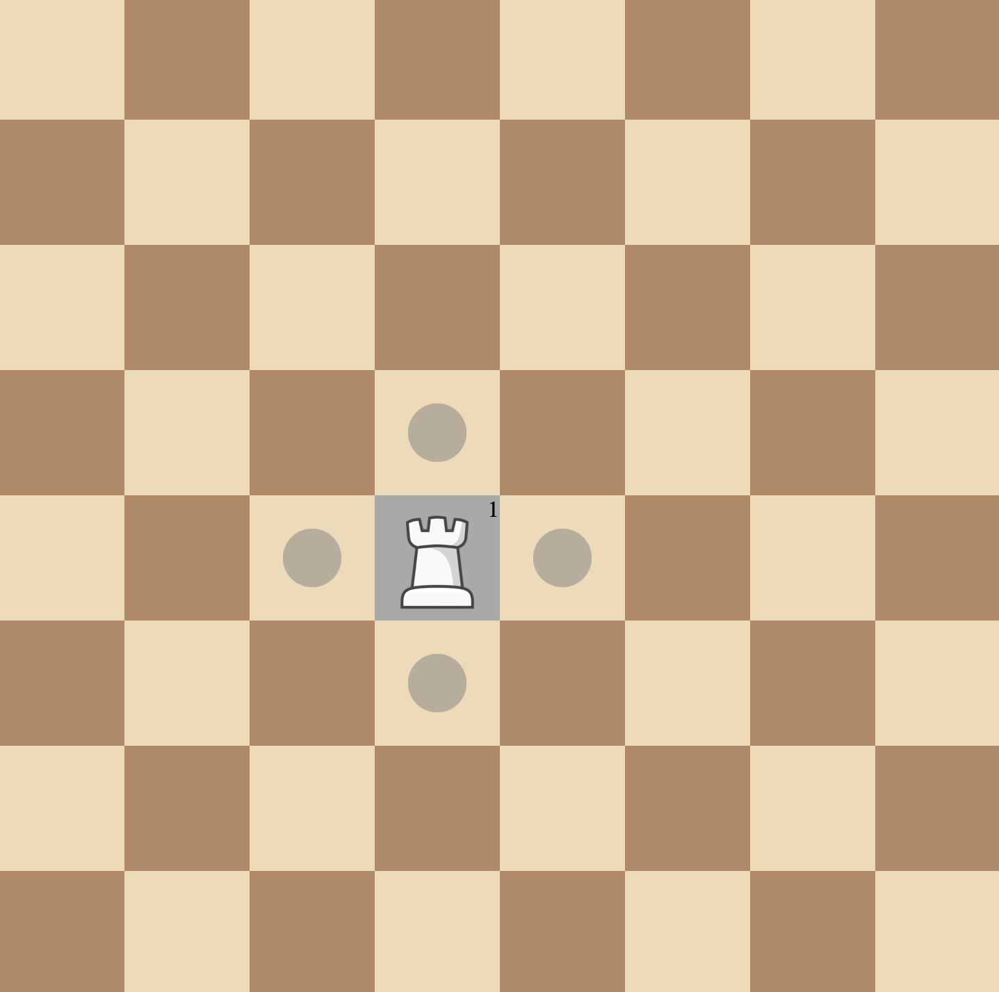

1. Firstly both players will place their queens and rooks. You can only place pieces in the first 3 rows These pieces will have a level. The white queen and rook will be level 2 The black queen will be level 3 and the black rook will be level 2
Levels Explained

Level 1 - means that piece can move till one square Level 2 - means that piece can move till two squares
Level 1 - means that piece can move till one square Level 2 - means that piece can move till two squares
2. Players will now have 5 moves each, which will be played turnwise. They can either place a pawn or Upgrade their queen or rook
How to Win?
1. If a player reaches the opponents red square, they win.
2. If a player captures all the opponents pieces they win.